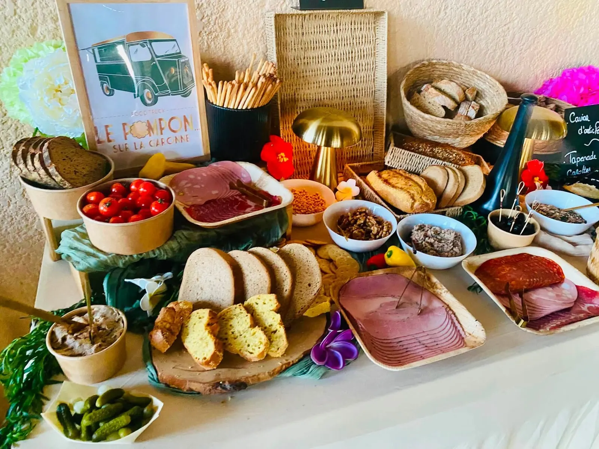
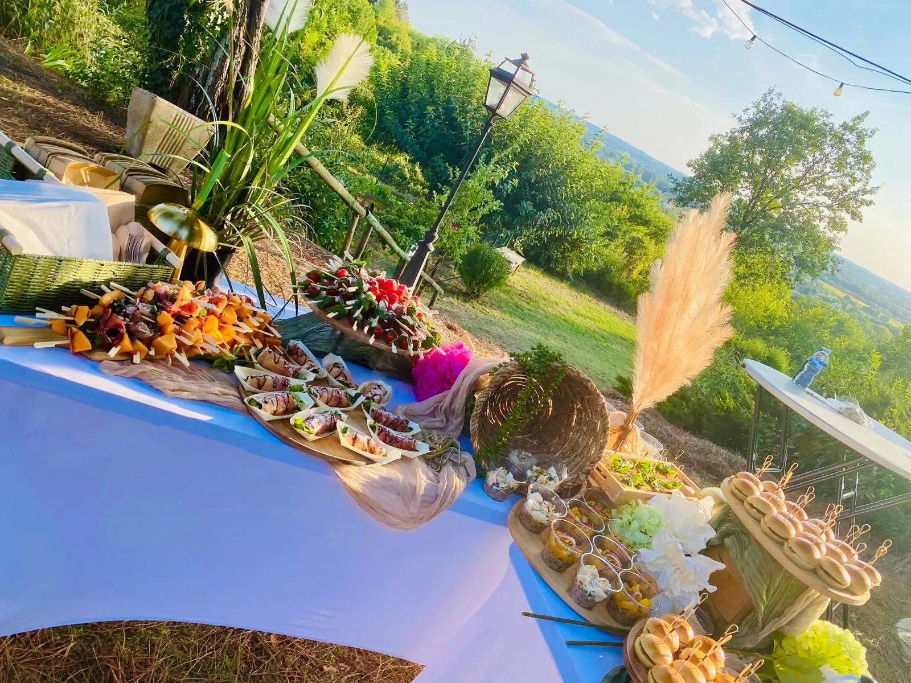
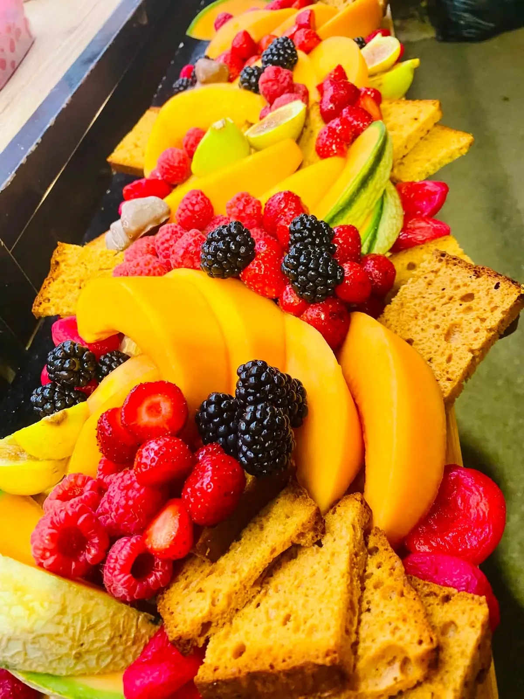
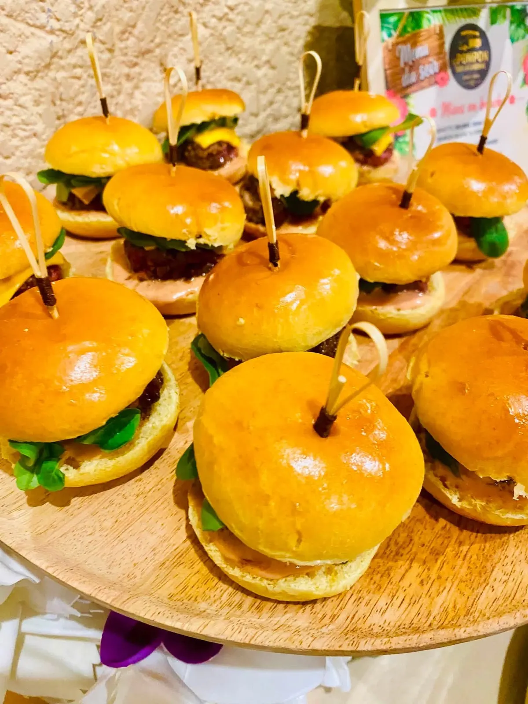
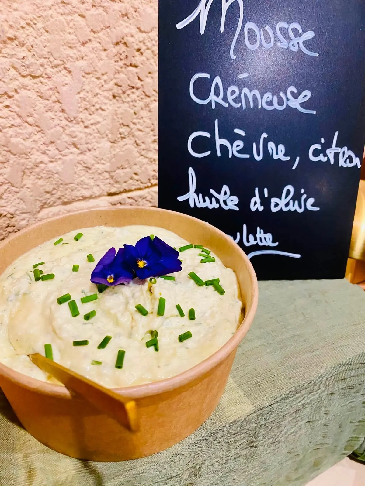
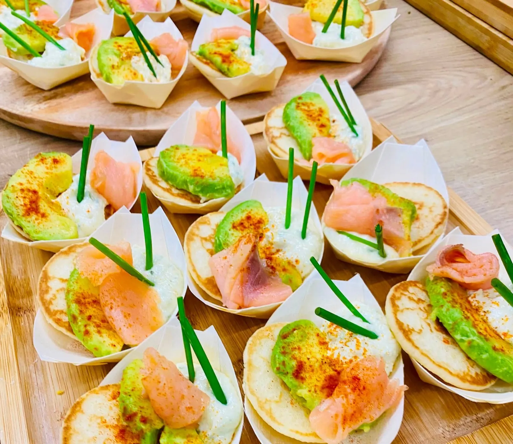
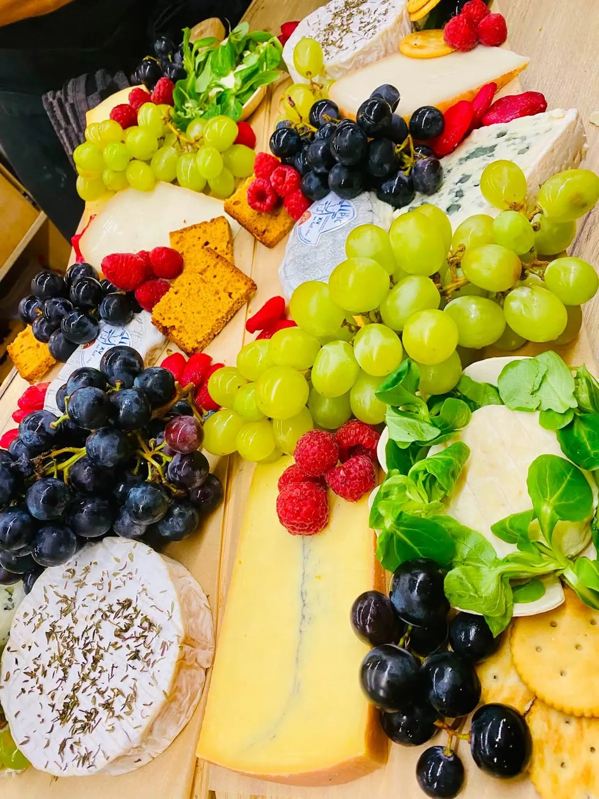
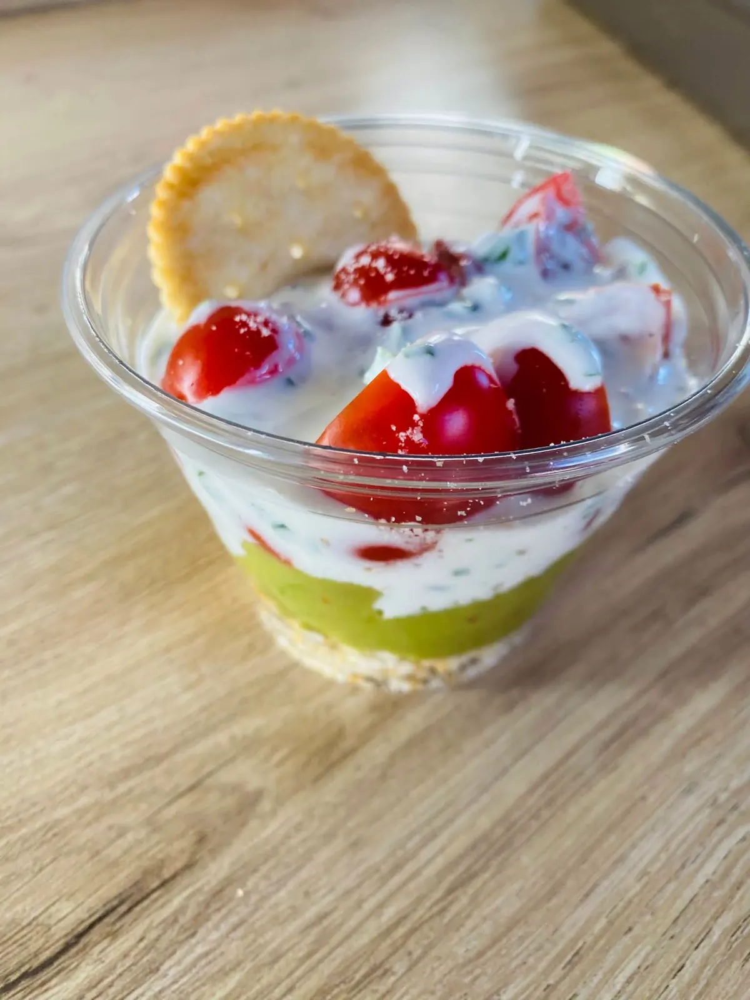

Le Pompon sur la Garonne
Food truck vintage et traiteur événementiel à Saint-Geniès-Bellevue, au nord de Toulouse. Une cuisine traditionnelle française, salée et sucrée, pour tout type d'événements. Tout est fait maison.
4,9sur 5, 39 avis Google

- Food truck vintage
- Traiteur événementiel
- Salé et sucré, fait maison
- 4,9 sur 5, 39 avis Google
- Saint-Geniès-Bellevue, Toulouse Nord
Le traiteur, pour tout type d'événements
Pour tout type d'événements, comme cet anniversaire de mariage de fin août : Le Pompon dresse le buffet et nourrit les convives toute la soirée, en cuisine traditionnelle française.
- Des buffets à plusieurs postesPensés pour nourrir tous les convives.
- De l'apéro au fromageLe buffet suit la soirée du début à la fin.
- Un bar à tartinadesEn plus du buffet.
- Salé et sucréDes bouchées aux plateaux de fruits et aux verrines.


Un anniversaire de mariage avec un gros buffet à trois postes pour nourrir les 80 convives sur toute la soirée, de l'apéro au fromage, avec un bar à tartinades en plus.
Le Pompon sur la Garonne, le dernier événement d'août
Sur le buffet
Quelques plats servis cette saison, en photo sur les buffets du Pompon.




Le food truck, en semaine
Entre deux événements, le camion vintage sort sur les places du nord toulousain. Le menu de la semaine et les rendez-vous sont publiés sur leur page Facebook.
- Place de la Mairie, Saint-Geniès-BellevueLes jours de marché, annoncés sur Facebook
- Saint-Martin-du-TouchCertains midis
- Chez vousPour une fête ou un événement privé
Parlons de votre événement
Date, nombre d'invités, salé ou sucré : un appel ou un message suffit pour commencer.
- Téléphone
- 07 82 82 34 47
- alyjfood@gmail.com
- Adresse
- Chemin de l'Enguille
31180 Saint-Geniès-Bellevue - Horaires
- Selon les marchés et les événements : à jour sur la fiche Google
